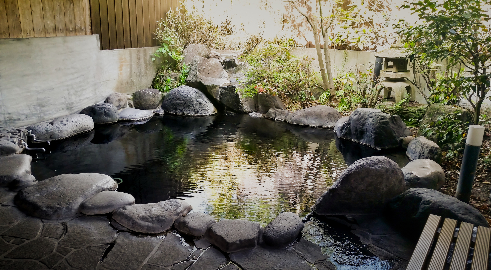
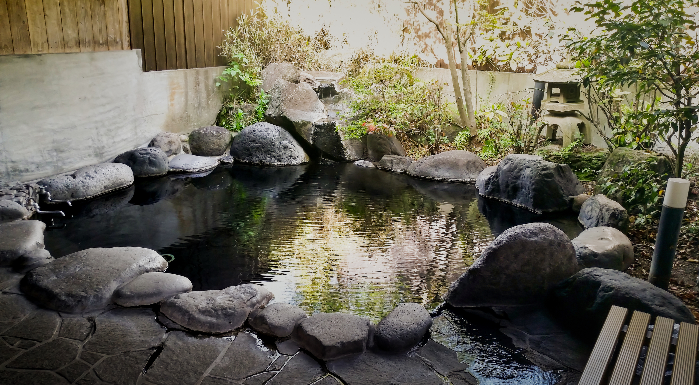

アクセス
静寂な山々を望む高原の地に包まれる「光華亭」へのアクセス方法をご案内いたします。
施設情報
光華亭
〒390-1521 長野県松本市美ヶ原高原1234-5
TEL: 0263-87-0011
お車でお越しの場合
- 東京方面から:中央自動車道松本ICを降り、国道158号線を経由して約50分
- 名古屋方面から:長野自動車道岡谷ICを降り、美ヶ原高原へ約60分
駐車場:敷地内に無料駐車場を完備しております。20台分のスペースをご用意しています。
公共交通機関でお越しの場合
-
1.電車をご利用の場合:
- 東京方面から:新宿駅から特急「あずさ」にて松本駅へ（約2時間30分）
- 名古屋方面から:名古屋駅から特急「しなの」にて松本駅へ（約2時間）
-
2.バスをご利用の場合:
- 松本バスターミナルから美ヶ原高原行きのバスに乗車し、「美ヶ原高原入口」停留所下車（約40分）
送迎サービス
松本駅または「美ヶ原高原入口」バス停までの送迎サービスをご利用いただけます（事前予約制）。
送迎をご希望のお客様は、事前にお電話またはご予約フォームにてお知らせください。
- 送迎対応時間:午前10時～午後5時
- 送迎予約窓口:TEL: 0263-87-0011